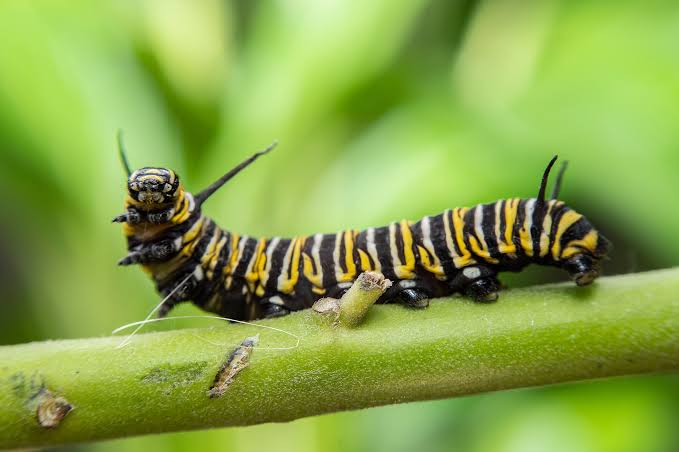
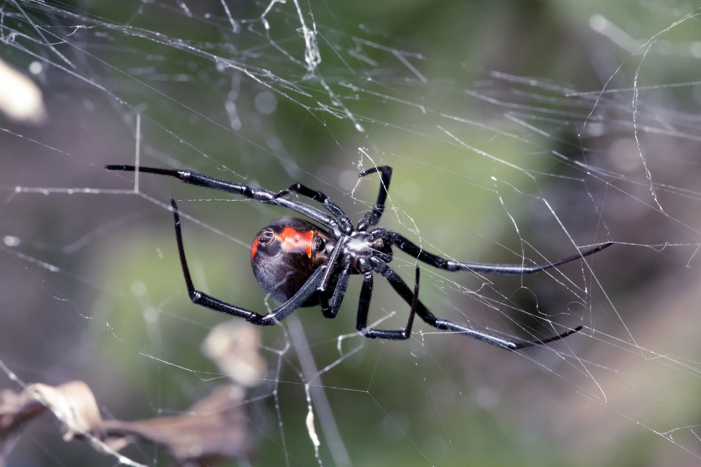
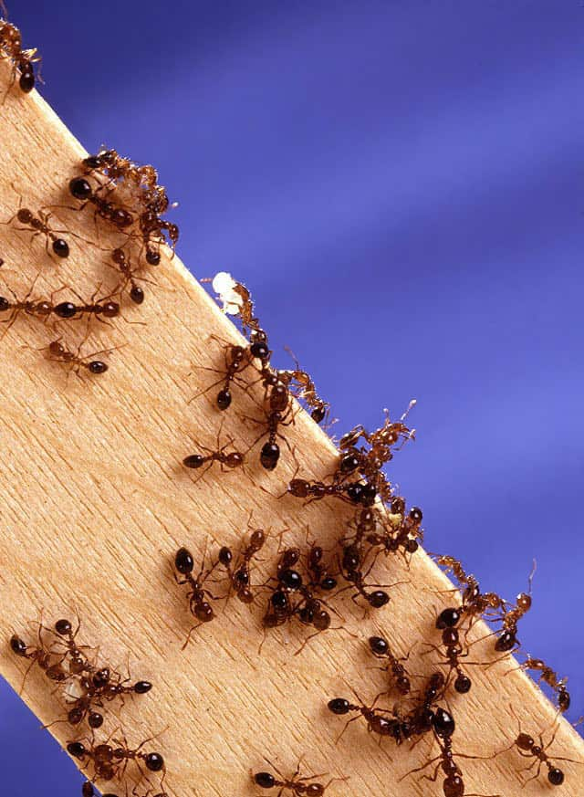

🐞 🐜 Insects: The Tiny Wonders of Nature
Insects are the most diverse group of animals on Earth, with millions of species found in nearly every habitat.
They play crucial roles in ecosystems, including pollination, decomposition, and serving as a food source for
other animals.
Explore the incredible variety of insects, from the delicate butterflies to the industrious ants. Learn about
their life cycles, behaviors, and adaptations that allow them to thrive in different environments.
Insects can be found in forests, grasslands, deserts, and even urban areas. Their unique features and abilities
make them fascinating subjects for study and observation.
nsects are among the most fascinating creatures on Earth. Although many are tiny, they play enormous roles in
maintaining the balance of nature. From colourful butterflies flying across gardens to hardworking ants building
underground colonies, insects are everywhere around us.




What Are Insects?
Insects are small invertebrate animals, meaning they do not have backbones. They belong to a group of animals called
arthropods.
Most adult insects have three main body parts:
- Head: Contains the eyes, antennae, and mouthparts.
- Thorax: The middle section, where the six legs and usually the wings are attached.
- Abdomen: Contains many of the organs needed for digestion, reproduction, and other body functions.
All adult insects have six legs. Many have wings, although some insects, such as fleas and worker ants, do not have
functional wings.
Insects live in forests, grasslands, deserts, gardens, freshwater environments, and even inside our homes.
How Insects Contribute to Nature
Insects contribute to nature in many ways. They help pollinate plants, which is essential for food production. They
also break down organic matter, recycling nutrients back into the soil. Additionally, insects serve as a vital food
source for birds, mammals, and other wildlife.
The Amazing World of Butterflies 🦋
Butterflies are among the most beautiful insects in the world. Their colourful wings make them easy to recognise,
and their transformation from caterpillars into adults is one of nature's most remarkable processes.
A butterfly begins life as an egg. The egg hatches into a caterpillar, which spends much of its time eating and
growing. When it is ready, the caterpillar forms a chrysalis. Inside, its body undergoes a remarkable
transformation, and eventually an adult butterfly emerges.
This process is called complete metamorphosis.
Butterflies also help pollinate flowers. As they feed on nectar, pollen can stick to their bodies and be carried
from one flower to another.
Their presence can also tell us something about the environment because many butterfly species depend on particular
plants and suitable habitats.
The Hardworking Insects: Ants 🐜
Ants are social insects that live in organised colonies. Some colonies contain thousands or even millions of
individuals.
An ant colony often includes a queen, workers, and, at certain times, reproductive males and females.
Worker ants gather food, care for the young, maintain the nest, and defend the colony. They communicate largely
through chemical signals called pheromones, which can help other ants locate food or follow a trail.
Ants are important to ecosystems because they help break down organic material, disperse some plant seeds, move
nutrients through the soil, and serve as food for other animals.
Some ants are also skilled farmers. Certain leafcutter ants collect pieces of leaves, not to eat directly, but to
cultivate a fungus that provides food for their colony.
Their teamwork demonstrates how complex behaviour can emerge in animals with very small brains.
Bees: Nature's Important Pollinators 🐝
Bees are essential pollinators in many natural ecosystems and agricultural environments.
When a bee visits a flower to collect nectar or pollen, pollen grains can attach to its body. When the bee visits
another compatible flower, some of that pollen may be transferred, helping the plant reproduce.
Honeybees live in colonies and produce honey from collected nectar. Other bees, including many solitary species, are
also important pollinators.
Bees face several threats, including habitat loss, some pesticide exposures, diseases, parasites, and
climate-related changes.
We can help bees by planting a variety of flowering plants, protecting natural habitats, and using pesticides
responsibly.
Protecting bees helps support biodiversity and the production of many crops that people depend on.
Dragonflies: Masters of the Air
Dragonflies are remarkable flying insects commonly found near ponds, lakes, rivers, and wetlands.
They have large compound eyes that provide a broad field of vision. Their two pairs of wings can operate with
considerable independence, allowing them to hover, turn quickly, and catch prey while flying.
Dragonflies are predators. Adults hunt mosquitoes, flies, and other small insects. Their young, called nymphs, live
in water and feed on aquatic animals.
Because dragonflies depend on suitable aquatic habitats for their early development, changes in water quality and
the destruction of wetlands can threaten some species.
Their presence can provide useful information about the condition of freshwater environments.
Mosquitoes: Small Insects With a Big Impact
Mosquitoes are familiar insects found in many parts of the world, particularly in warm and humid regions.
Only female mosquitoes of species that take blood meals bite humans or other animals. They use nutrients from blood
to help produce eggs. Both males and females generally obtain energy from sugary sources, such as plant nectar.
Some mosquito species can transmit diseases, including malaria, dengue, yellow fever, and chikungunya. The diseases
transmitted depend on the mosquito species and the pathogens present in a particular region.
In Nigeria, preventing mosquito bites is especially important because malaria remains a serious public-health
concern.
- Sleeping under an insecticide-treated mosquito net.
- Removing standing water where mosquitoes can breed.
- Using appropriate mosquito repellents.
- Installing window and door screens where possible.
- Following local public-health advice.
Although mosquitoes can be dangerous, they also form part of food webs and interact with other organisms in their
environments.
Beetles: Nature's Diverse Survivors
Beetles belong to the insect order Coleoptera, which contains an extraordinary diversity of species.
Most adult beetles have hardened front wings called elytra. These protective structures cover the delicate hindwings
used for flight in many species.
Beetles occupy a wide range of habitats and perform many ecological functions.
Some feed on plants, others hunt smaller animals, and many help decompose dead wood, animal remains, and other
organic material. Dung beetles, for example, bury or move animal dung, helping recycle nutrients and sometimes
improving soil conditions.
Not all beetles are beneficial to human activities. Some species damage crops or stored food, while others attack
trees. Nevertheless, beetles as a group are an important part of Earth's biodiversity.
How Insects Help the Environment
Insects are essential to the functioning of many ecosystems.
- Pollination: Bees, butterflies, moths, and other insects help many flowering plants reproduce.
- Decomposition: Some insects feed on dead plants, animals, and waste, helping recycle nutrients.
- Soil improvement: Ants and other insects move soil and organic material, influencing soil structure and
nutrient distribution.
distribution.
- Natural pest control: Predatory insects, including ladybirds and some dragonflies, help control populations
of other
small animals.
- Food chains: Insects provide food for birds, fish, amphibians, reptiles, bats, and many other animals.
Without insects, many ecosystems would change dramatically. Some plants would reproduce less successfully,
decomposition would be affected, and numerous animals would lose important food sources.
The Life Cycle of Insects
Insects generally develop through one of two major types of metamorphosis.
- Egg: The insect begins life inside an egg.
- Larva: The young insect feeds and grows.
- Pupa: The insect undergoes major changes in body structure.
- Adult: The mature insect emerges and eventually reproduces.
Butterflies, moths, beetles, flies, and bees undergo complete metamorphosis.
Incomplete metamorphosis
This involves three main stages:
- Egg: Development begins.
- Nymph: The young insect resembles a smaller version of the adult but may lack fully developed wings and
reproductive organs.
- Adult: The insect reaches maturity.
Grasshoppers, cockroaches, and dragonflies undergo incomplete metamorphosis. These life cycles allow
insects to occupy different habitats and exploit different food sources during their development.
Threats Facing Insects
Despite their adaptability, many insect species face serious environmental pressures.which are;
Habitat destruction
Forests, wetlands, grasslands, and other natural habitats are being changed or destroyed by development,
agriculture, and other human activities.
Pesticide exposure
Some pesticides can harm non-target insects, including pollinators and natural predators of agricultural pests.
Climate change
Changing temperatures and rainfall patterns can affect insect survival, reproduction, migration, and the
availability of food plants.
Pollution
Light pollution can disrupt the behaviour of nocturnal insects, while other forms of pollution can damage their
habitats.
Loss of flowering plants
When gardens and landscapes contain fewer suitable plants, insects that depend on nectar, pollen, or specific
host plants may struggle to survive.
Protecting insect diversity requires healthier habitats, careful land management, and greater awareness of how
insects support ecosystems.
“Discover nature. Learn something new. Appreciate our world!!"
📧 Contact Us | 🌍 Join Us in Protecting Nature
© 2026 Maria’s Nature Haven. All Rights Reserved. 💚